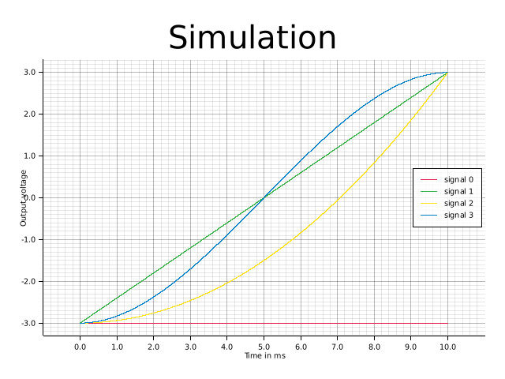
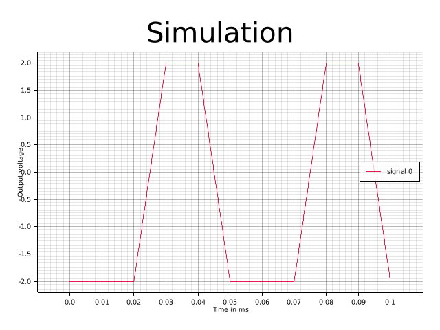

Signal generation logic
General principle
The Signal Generators are based on an integrator design :
Note
The actual implementation is a bit more complex, as we’re working with (different) finite-bit number representations. We also need to do some unit conversions to take into account the cycle period, and to convert between output voltage and internal number.
A very natural way to control the output is to specify and then let the integrator run for a period of time. After a predefined amount of time, we can then give a new set of values, changing the output. This system allows to generate any 3rd degree polynomial, which in turn allows to approximate any waveform.
Example
 Simulation of single sections. The different types of polynomials possible are displayed. The number of a signal is equivalent to it's polynomial degree.
 Simulation of a signal, consisting of 4 different linear sections. It's repeated once
Implementation options
In pratice, there are a couple more questions to solve :
- As the signal is a piecewise function, what kind of continuity should there be between each section?
- discontinous : at the transition tick, we replace all values with the new ones.
- (continous) : , the 3 others values are replaced
- (continous and continous first derivative) :
- :
- Instead of only giving one array , we have one array containing all the
section definitions, and than the ASG gets an array having pointers to the section and decribing the transition :
.
The signal generator then steps through that array, and when it reaches the end starts over. This is especially usefull for reducing memory usage of signals with pattern, like a staircase signal (flat, up, flat, up, ...). - In pratical, we might not want infinitely looping signal generators. To more finely control their behaviour, there are 2 mechanisms :
- internal control : each signal generator counts how many sections and how many periods it already generated. It's possible to configure them so that they stop (or pause ?) after a specified amount.
- external control : the triggering modules can also send a pause or stop command to the signal generator.
Raw vs voltage sections
There are 2 ways to define the sections :
- Raw sections : the values are signed 64-bits numbers, and are sent as-is to the FPGA.
- Voltage sections : Instead of giving the values for the 4 first derivatives, you select instead the starting point, the ending point, and the slope/ derivative at the start and ending point. You then select which kind of interpolation you would have : constant, linear, quadratic or cubic. The values are converted from Volt , Volt/s, etc… into the appropriate values for the FPGA - taking into account the DAC calibration and the FPGA clock speed.